Inhalt Index DeskTop Bronstein

 Optimierung Diskrete dynamische Optimierung Bellmannsche Funktionalgleichungsmethode
Optimierung Diskrete dynamische Optimierung Bellmannsche Funktionalgleichungsmethode


Mittels der Funktionalgleichungen (18.129,18.130) werden, mit 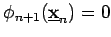 beginnend, für abnehmende j alle Funktionswerte 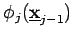 mit 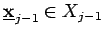 bestimmt. Dies erfordert für jedes die Lösung eines Optimierungsproblems über dem Entscheidungsbereich 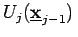. Für jedes  ergibt sich dabei eine Minimalstelle 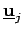 als optimale Entscheidung für die erste Stufe eines mit
ergibt sich dabei eine Minimalstelle 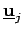 als optimale Entscheidung für die erste Stufe eines mit  beginnenden Teilprozesses 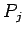. Sind die Mengen Xj nicht endlich oder auch sehr groß, dann können die Werte 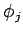 unter Umständen an ausgewählten Stützstellen berechnet werden, woraus mittels Interpolation gegebenenfalls Zwischenwerte ermittelt werden können. Mit 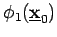 ist der Optimalwert der Kostenfunktion für den Prozeß P gefunden. Die Ermittlung einer optimalen Politik 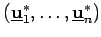 sowie einer zugehörigen Zustandsfolge 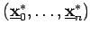 kann auf 2 Arten erfolgen.
beginnenden Teilprozesses 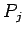. Sind die Mengen Xj nicht endlich oder auch sehr groß, dann können die Werte 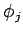 unter Umständen an ausgewählten Stützstellen berechnet werden, woraus mittels Interpolation gegebenenfalls Zwischenwerte ermittelt werden können. Mit 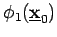 ist der Optimalwert der Kostenfunktion für den Prozeß P gefunden. Die Ermittlung einer optimalen Politik 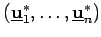 sowie einer zugehörigen Zustandsfolge 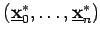 kann auf 2 Arten erfolgen.